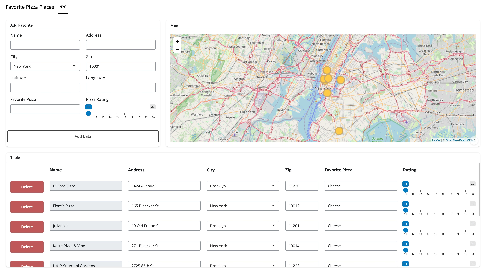

Overview
faketables is a table construction tool that creates and renders tables using Shiny inputs, while managing data inserts, updates, and deletions. Users define the column definitions using the provided constructors and pass their data, and faketables handles the rest. Because faketables is a Shiny module, it can be used in any Shiny application and excels in applications where users need to interact with the data in great detail.
Benefits
faketables provides several distinct benefits over packages with similar features such as DT and reactable:
- Users can implement any Shiny input method they wish into a cell
- A
faketablesobject contains the entirety of the data that is shown to the user, along with any columns the developer has chosen to hide from the user - Information on which rows are inserted, updated, or deleted is retained. Again, this data is stored in its entirety.
- All setup can be performed outside of a Shiny server context and developers only need two functions in the Shiny app, one in the UI and one in the server, for update and delete functionality, with a third needed for insertions.
Installation
You can install the development version of faketables from GitHub with:
# install.packages("pak")
pak::pak("landeranalytics/faketables")Usage
Usage is detailed in the Get Started Vignette and an example app about the best pizza in NYC can be found here with the code for that app here.
